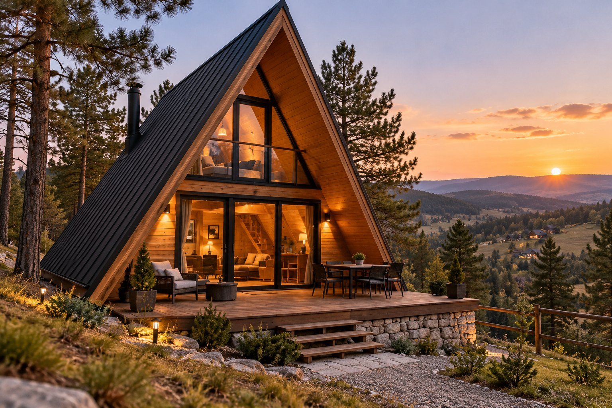
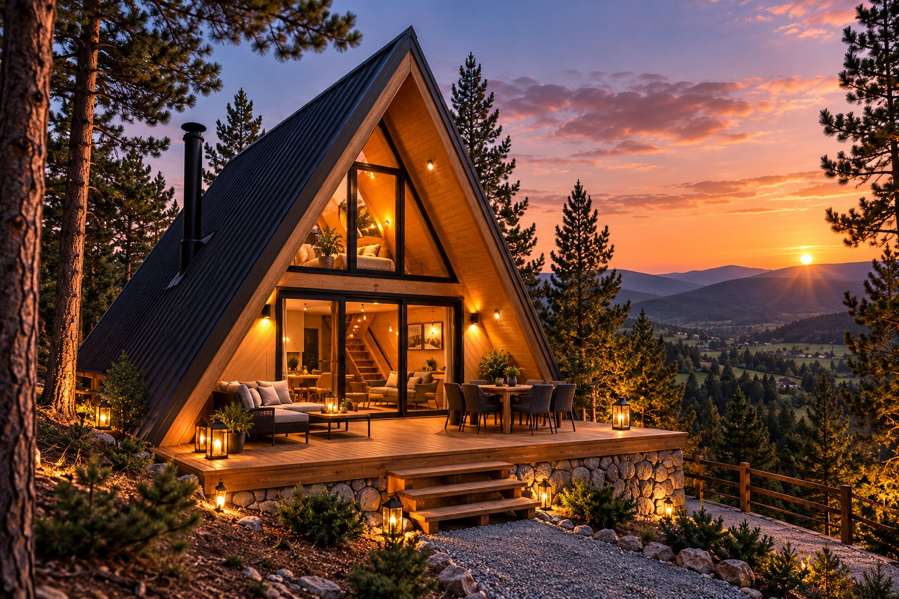
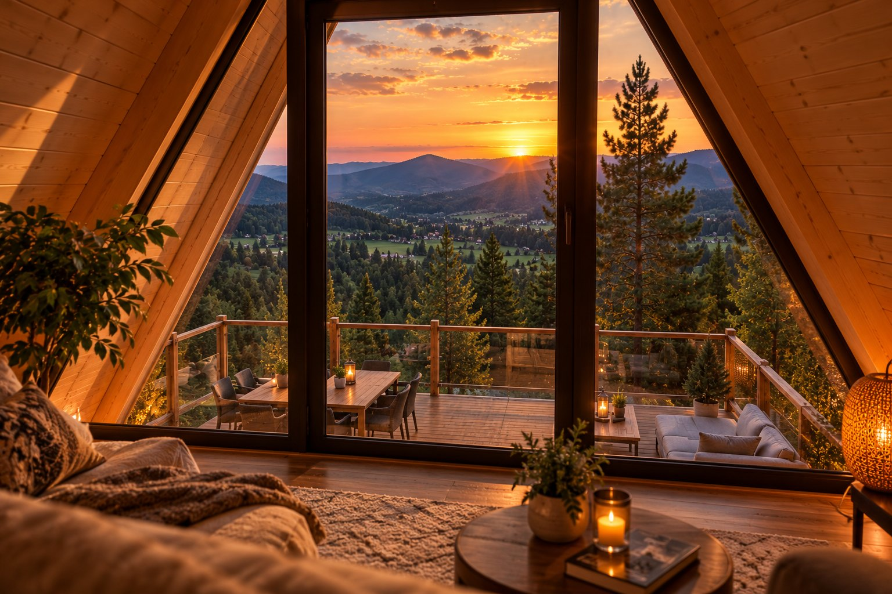
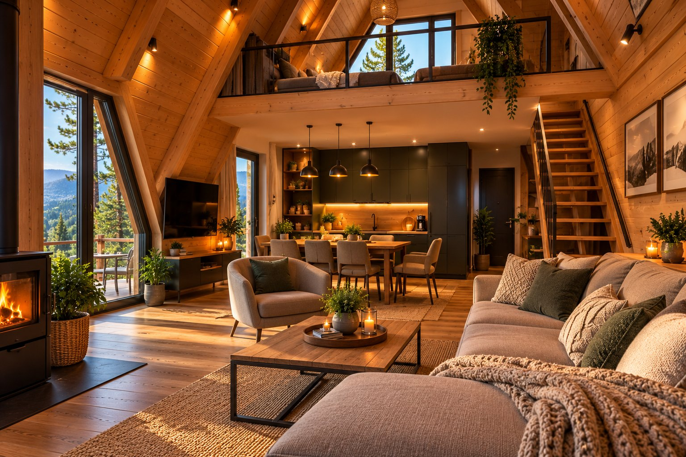
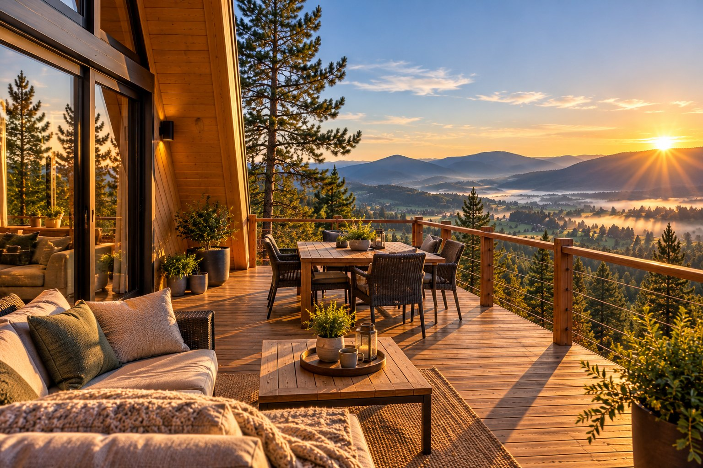
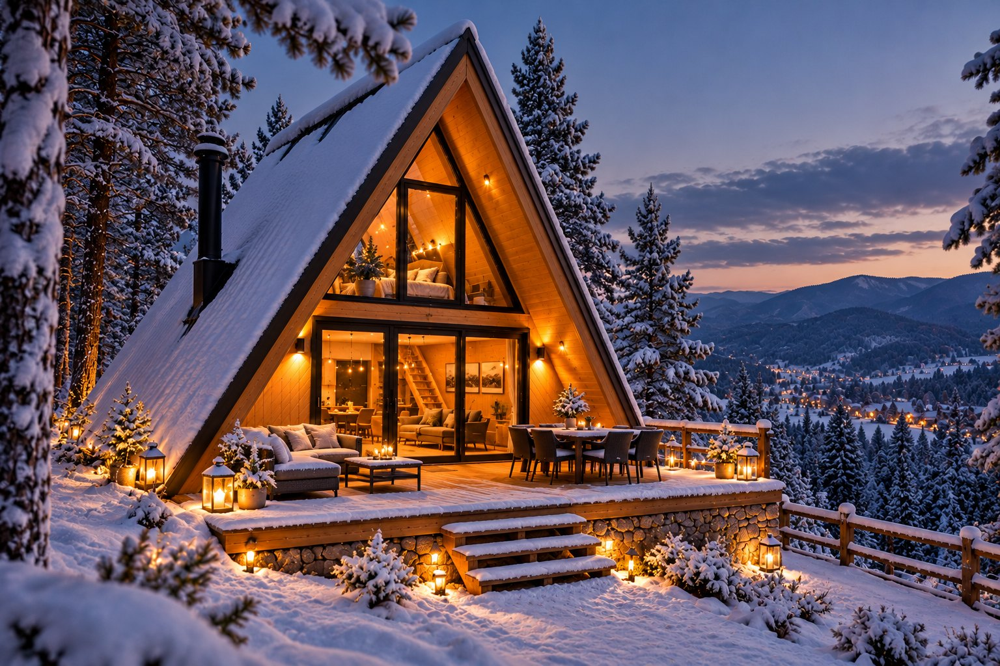

Spavaj pod trouglom krova i zvezdama.
A-frame kućica usred borove šume na Zlatiboru. Staklena fasada ka planini, krevet na galeriji pod samim krovom i tišina koju u gradu ne možete da kupite.

Kosi krov koji se spušta do zemlje, drvo iznutra i cela prednja strana od stakla. Ujutru vas budi svetlo sa planine, uveče gledate zvezde iz kreveta.
Bračni krevet pod samim vrhom krova, sa pogledom kroz staklenu fasadu.
Cela prednja strana otvorena ka šumi i planini – priroda je deo enterijera.
[OPREMA: ringla, frižider, aparat za kafu…] i sve za doručak na terasi.
Drvena terasa ispred kućice – za jutarnju kafu i večeri uz [ROŠTILJ / VATRU].
Takođe: [KUPATILO SA TUŠEM] · [GREJANJE] · [WI‑FI] · [PARKING] · [POSTELJINA I PEŠKIRI]





Leti šetnje i vodopadi, zimi sneg i staze. Kada vam dosadi mir – sve je na kratkoj vožnji.
Kućica je u miru, ali ne daleko – [X] minuta vožnje od centra Zlatibora.
Minimalno [X] noćenja · Prijava od [14:00] · Odjava do [11:00] · Ljubimci: [DA / NE] · Boravišna taksa: [IZNOS]
Pošaljite upit sa željenim datumima – javljamo se u roku od [X] sati sa potvrdom i uputstvom kako da nas pronađete.